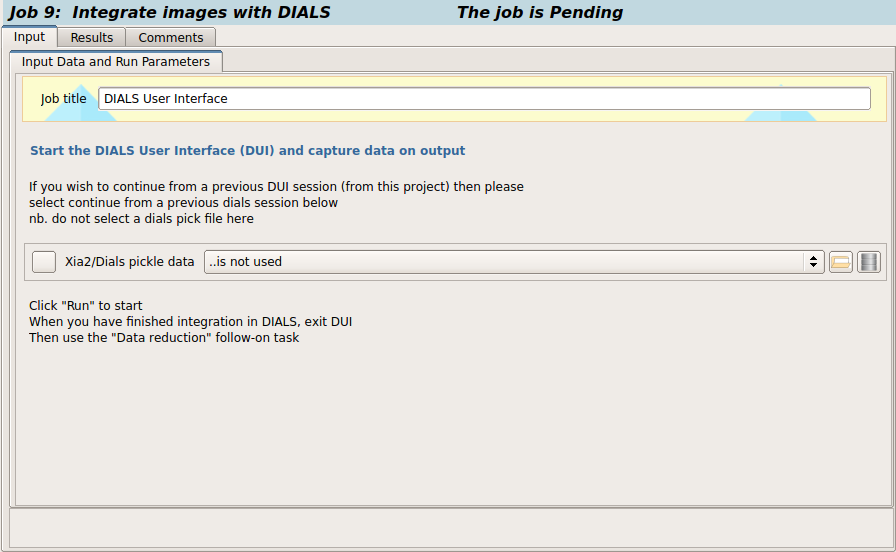

Integrate images with DIALS - using DUI¶
The DIALS User Interface (DUI) provides a robust graphical interface to run and control DIALS. DIALS is a modern x-ray data analysis package (that can also be used from a command line) which is used for processing diffraction images. DIALS fully supports most image data formats, and will integrate and index reflections.
You can click here to learn more about processing with DUI.
Input¶

No input information is required in the task interface to run DUI, although there is an option available to continue from a previous task. The x-ray image input is controlled through the DUI interface itself; if you would like to continue on from a previous DUI task in the project you can set this in the drop down menu by selecting one of the items listed as,``continue from previous dials session``.
On termination, the output reflection data objects will be automatically added to the project database and listed as output.
Interactive Image Processing with DUI includes next steps:
Import¶
import image data files into a format that can be used within DIALS.
If all the images in the dataset are consistent, then the dataset is imported and initial models for the “Beam”, “Scan” and “Detector” are created. The images are now also displayed within the “Image” tab.
Find¶
locate spots on some or all of the data
The first “real” task in any processing using DIALS is the spot finding. This program tries to find strong spots on a sequence of images. Spot finding will be done against each logically grouped set of images given. Strong pixels will be found on each image and spots will be formed from connected components.
Spot-finding, like most of the other processing steps in DUI, presents user parameters at two levels of detail. The “Simple” tab contains the basic parameters that are the most commonly changed. The “Advanced” tab contains all of those again, plus other parameters that may be required for expert use with challenging data sets. Once the job is finished, the image viewer will display small blue boxes around the pixels that have been marked as strong.
It is also useful to click on the “Report View” tab and scroll down to the “Analysis of strong reflections”. This shows a graph of the number of strong spots found per image.
If you see the number of strong spots drop off over the dataset, or otherwise show large variability, we may start to worry about issues such as radiation damage or a poorly-centered crystal.
If you have a case where spot-finding has gone badly, it may be helpful to debug using the "image viewer" and "reciprocal lattice viewer", which can be launched via buttons shown on the “Tools” tab.more about reciprocal lattice viewer
This viewer displays the strong spots in 3D, after mapping them from their detector positions to reciprocal space. In a favourable case you should be able to see the crystal’s reciprocal lattice by eye in the strong spot positions. Some practice may be needed in rotating the lattice to an orientation that shows off the periodicity in reciprocal lattice positions.
Index¶
determining a crystal model which explains the position of the found spots (may optionally involve choices about lattice or space group)
This program attempts to perform autoindexing on strong spots after spot finding. If one or more lattices are identified given the input list of strong spots, then the crystal orientation and experimental geometry are refined to minimize the differences between the observed and predicted spot centroids.
The simple parameters allow only to select between different “Indexing Methods”, the default of which is the 3D FFT algorithm. The other options are the 1D FFT (DPS) algorithm and a special version of the 3D FFT called real space grid search, which is particularly useful for narrow wedges containing multiple lattices, but requires a known cell and space group to be set under the “Advanced” parameters.
By default the program searches for a primitive lattice, and then proceeds with refinement in space group P1. If the unit cell and space group parameters are set, then the program will only accept solutions which are consistent with these parameters. Space group constraints will be enforced in refinement as appropriate.
The RMSDs at the start of each cycle start off worse than at the end of the previous cycle, because the best fit model for lower resolution data is being applied to higher resolution reflections. As long as each macrocycle shows a reduction in RMSDs then refinement is doing its job of extending the applicability of the model out to a new resolution limit, until eventually the highest resolution strong spots have been included.
Lattice¶
finding a Bravais lattice
Full refinement of the crystal and experimental geometry parameters will be performed (by default) in all Bravais settings that are consistent with the input primitive unit cell. A table is printed containing various information for each potential Bravais setting, including the metric fit (a measure of the deviation from the triclinic cell), the root-mean-square-deviations (rmsd), in mm, between the observed and predicted spot centroids, the refined unit cell parameters in each Bravais setting, and the change of basis operator to transform from the triclinic cell to each Bravais setting.
If Bravais lattice unknown before indexing, we can determine likely candidates - by taking the results of the P1 autoindexing, and running refinement with all of the possible Bravais settings applied. You can then choose your preferred solution. Run this without altering any of the defaults, as they are suitable for the majority of data sets.Once the job has run, a window will pop up containing scoring data and the unit cell for each Bravais setting.
Refine¶
improving the model
The model is already refined during indexing, but we can also add explicit refinement steps here. This is beneficial because it will use all reflections in refinement rather than a subset, uses a more sophisticated outlier rejection algorithm and will later allow us to fit a scan-varying model of the crystal.
In the “Report View” we can see plots of how the cell and orientation changes during the scan.
Other useful plots in the report are:
Difference between observed and calculated centroids vs phi, which shows how the average residuals in each of X, Y, and φ vary as a fuction of φ. If scan-varying refinement has been successful in capturing the real changes during the scan then we would expect these plots to be straight lines.
Centroid residuals in X and Y, in which the X, Y residuals are shown directly. The key point here is to look for a globular shape centred at the origin.
Difference between observed and calculated centroids in X and Y, which show the difference between predicted and observed reflection positions in either X or Y as functions of detector position. From these plots it is very easy to see whole tiles that are worse than their neighbours, and whether those tiles might be simply shifted or slightly rotated compared to the model detector.
Integration¶
recording how many counts in each spot, subtract background, usually fit reflection profiles.
This program is used to integrate the reflections on the diffraction images. The program will output a set of integrated reflections and an experiment list with additional profile model data.
Mostly, the default parameters are fine for Pilatus data, which will perform XDS-like 3D profile fitting while using a generalized linear model in order to fit a Poisson-distributed background model.
It possible to have adjusted the resolution limits using arameters d_min and d_max under prediction in the “Advanced” parameters tab.
After these jobs are finished, the reflections are ‘post-processed’, which includes the application of the LP correction to the intensities. Then summary tables are printed giving quality statistics first by frame, and then by resolution bin.
more about Report View
The “Report View” now contains additional plots under the “Analysis of reflection intensities” and “Analysis of reference profiles” sections. It is worth checking through these, particularly paying attention to the following:
Reflection and reference correlations binned in X/Y. These are useful companions to the plots of centroid residual as a function of detector position above. Whereas the above plots show systematic errors in the positions and orientations of tiles of a multi-panel detector, these plots indicate what effect that (and any other position-specific systematic error) has on the integrated data quality. The first of these plots shows the correlation between reflections and their reference profiles for all reflections in the dataset. The second shows only the correlations between the strong reference reflections and their profiles (thus these are expected to be higher and do not extend to such high resolution).
Distribution of I/Sigma vs Z. This reproduces the IσIIσI information versus frame number given in the log file in a graphical form. Here we see that IσIIσI is fairly flat over the whole dataset, which we might use as an indication that there were no bad frames, not much radiation damage occurred and that scale factors are likely to be fairly uniform.
At this point we could export the integrated data set in MTZ format
Symmetry¶
This program implements the methods of POINTLESS [Evans 2006] and [Evans_2011] for scoring and determination of Laue group symmetry. The program takes as input a set of one or more integrated experiments and reflections.
Stages of space group determination in POINTLESS :
from the cell dimensions, determine the maximum possible lattice symmetry, with some tolerance ( ignoring any input symmetry )
for each possible rotation operator, score potentially related observations pairs for agreement ( correlation coefficients and R-factor )
score all possible combinations of operators to determine the point group ( point groups from the maximum down to P1 )
score axial systematic absences to detect screw axes, hence space group ( axial observations are sometimes unobserved )
Symmetry determination with POINTLESS :
- score individual symmetry operators in the maximum lattice group
comparing pairs of observations related by each possible rotational operator, using correlation coefficients and R-factors on normalized intensities | E | 2
score possible point groups
space group from axial systematic absences
Note
space group is only a hypothesis until the structure has been determined and satisfactorily refined
Scale¶
correction for experimental effects i.e. beam intensity, illuminated volume, sample absorption etc.
This program performs scaling on integrated datasets, which attempts to improve the internal consistency of the reflection intensities by correcting for various experimental effects. By default, a physically motivated scaling model is used, with a scale, decay (B-factor) and absorption correction. If the input files contain multiple datasets, all data will be scaled against a common target of unique reflection intensities.
A scaling.html file is also generated, containing interactive plots of merging statistics and scaling model plots.
Export¶
exporting the results of dials processing in various formats.
The output formats currently supported are:
MTZ format exports the files as an unmerged mtz file, ready for input to downstream programs such as Pointless and Aimless. For exporting integrated, but unscaled data, the required input is a models.expt file and an integrated.refl file. For exporting scaled data, the required input is a models.expt file and a scaled.pickle file, also passing the option intensity=scale.
NXS format exports the files as an NXmx file. The required input is a models.expt file and an integrated.refl file.
MMCIF format exports the files as an mmcif file. The required input is a models.expt file and an integrated.refl file.
XDS_ASCII format exports intensity data and the experiment metadata in the same format as used by the output of XDS in the CORRECT step - output can be scaled with XSCALE.
SADABS format exports intensity data (and geometry by direction cosines) as an ersatz-SADABS format reverse engineered from the file format used by EvalCCD for input to SADABS.
MOSFLM format exports the files as an index.mat mosflm-format matrix file and a mosflm.in file containing basic instructions for input to mosflm. The required input is an models.expt file.
XDS format exports a models.expt file as XDS.INP and XPARM.XDS files. If a reflection pickle is given it will be exported as a SPOT.XDS file.
for more information please visit: https://dials.github.io/index.html
Further information on DIALS and DUI, is available from the DIALS web-site: DIALS Home Page
References
Evans, P. (2006). Acta Cryst. D62, 72-82.
Evans, P. R. (2011) Acta Cryst. D67, 282-292.
ACKNOWLEDGEMENTS
This article uses materials from tutorials